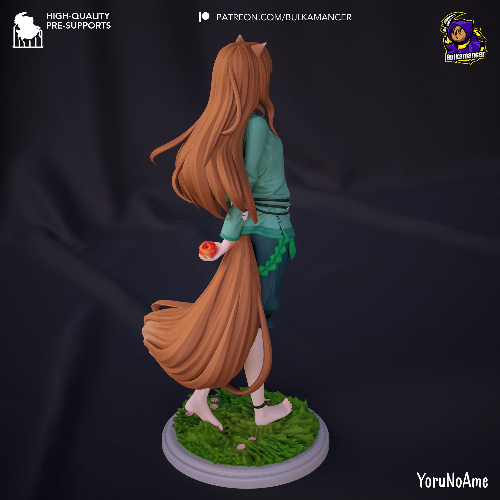

角色雕像
原始ZIP通过CRC，含17个模型成员，格式为.stl。成员名显示主体、头发、服装、手臂、苹果、尾巴与底座等拆件；对应原图可见长发、兽耳与大型尾巴、手持苹果及草地圆形底座。
原始包名标注为无支撑版本。切片前应逐件确认单位、方向、接触面和支撑需求；长发、尾巴、手指、耳尖及苹果等细部需重点检查，装配时按成员名核对主体、附件与底座接口。
已验证ZIP CRC、成员可读和原图解码（2048×2048），但尚未替代逐件流形、自交、壁厚、比例、接口公差或实机打印验证；不推断作者、授权或推荐打印参数。
适合作为角色雕像的切片、分件装配、上色和展示规划素材；名称依据来源目录“狼与香辛料”、图片文件名holo及图中可见角色造型建立。
百度网盘稳定下载 提取码：c277